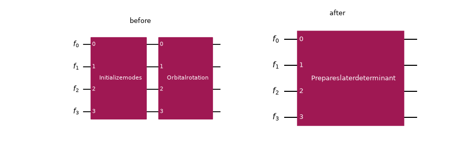
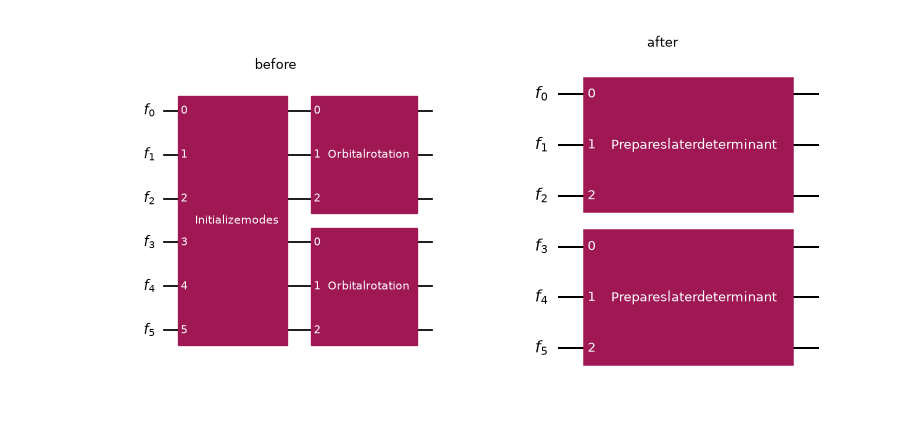
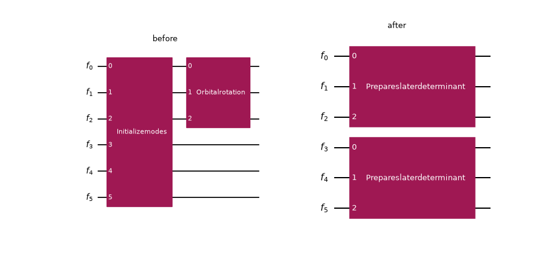
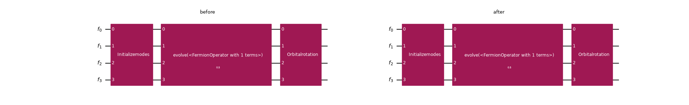
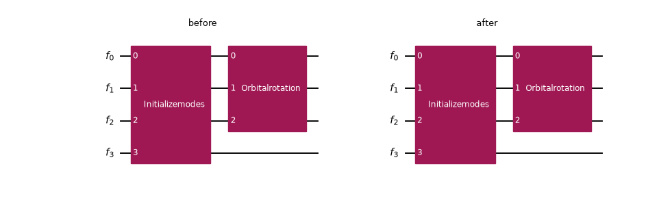
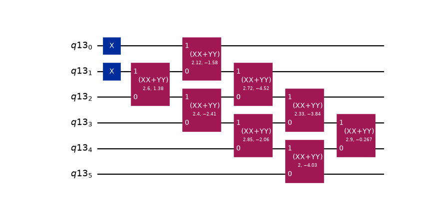
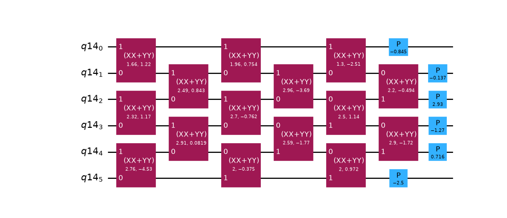

Optimize Slater determinant preparation¶
Important
The concepts in this guide are currently available only in the Python API. Equivalent functionality will be made available in the C API in a future release.
An InitializeModes gate declares a reference mode occupation; an
OrbitalRotation gate rotates the single-particle basis. Placed back to back, the two
gates prepare a Slater determinant; the modes start in the reference determinant and are then
rotated into the target orbitals. The PrepareSlaterDeterminant gate captures that
composition, and because it carries the reference occupation, transpiling it can use the rectangular
givens_decomposition_slater(), which realizes only the occupied
orbitals, instead of the full square decomposition an OrbitalRotation alone requires. That
is a strictly cheaper synthesis (see the payoff at the end of this guide).
The MergeSlaterDeterminantPreparation transpiler pass detects the
InitializeModes-then-OrbitalRotation pattern in a FermionicCircuit and
rewrites it into PrepareSlaterDeterminant gates, so a later synthesis stage picks up the
reduced decomposition automatically. Under simulation, the rewrite is a no-op on the state:
PrepareSlaterDeterminant is validate-then-rotate (it validates the reference occupation
and then applies the rotation, just as the two separate gates do), so the merge unlocks the
cheaper synthesis without changing the prepared state.
Throughout this guide, each circuit is drawn before and after the pass, side by side: the input
on the left, and the result of running the pass on it on the right. Two helpers do that. merge
runs the pass on a copy of the circuit (through its FermionicDAGCircuit) and converts the
result back to a drawable FermionicCircuit, and draw_merge draws both halves into a
single before/after figure:
>>> import matplotlib.pyplot as plt
>>> import numpy as np
>>>
>>> from qiskit_fermions.circuit import FermionicCircuit
>>> from qiskit_fermions.circuit.library import InitializeModes, OrbitalRotation
>>> from qiskit_fermions.transpiler import FermionicCircuitToDAG
>>> from qiskit_fermions.transpiler.converters import FermionicDAGToCircuit
>>> from qiskit_fermions.transpiler.passes import MergeSlaterDeterminantPreparation
>>>
>>> def merge(circuit):
... dag = FermionicCircuitToDAG().run(circuit)
... merged = MergeSlaterDeterminantPreparation().run(dag)
... return FermionicDAGToCircuit().run(merged)
>>>
>>> def natural_size(circuit):
... # the figure size Qiskit picks for a circuit on its own (discard the probe figure)
... probe = circuit.draw("mpl")
... size = probe.get_size_inches()
... plt.close(probe)
... return size
>>>
>>> def draw_merge(circuit):
... merged = merge(circuit)
... # let Qiskit size each half naturally, then lay them out side by side
... (bw, bh), (aw, ah) = natural_size(circuit), natural_size(merged)
... fig, (before, after) = plt.subplots(1, 2, figsize=(bw + aw, max(bh, ah)))
... circuit.draw("mpl", ax=before)
... merged.draw("mpl", ax=after)
... before.set_title("before")
... after.set_title("after")
... return fig
What gets merged¶
The pass recognizes three patterns, all keyed off the block-spin mode convention that
InitializeModes and OrbitalRotation use. For a system with norb spatial
orbitals, the modes 0..norb are the spin-alpha sector, and norb..2*norb are the spin-beta
sector. Slater determinant preparation is done per spin sector because each sector has its own
(electrons, orbitals) shape.
Full-register (or spinless)¶
The simplest pattern is using InitializeModes, immediately followed by an
OrbitalRotation on the same modes. This is the spinless case (one determinant over all
modes) and also a spinful circuit whose rotation spans both sectors at once. The two gates fuse into
a single PrepareSlaterDeterminant:
>>> circuit = FermionicCircuit(4)
>>> circuit.append(InitializeModes([1, 1, 0, 0]), circuit.modes)
>>> circuit.append(OrbitalRotation(np.eye(4)), circuit.modes)
>>> draw_merge(circuit)
<Figure size ... with 2 Axes>
{kind=link}
{kind=link}

Per spin sector¶
This is the same shape, but restricted to one spin half. Here, two independent initialize-then-rotate pairs, one
per sector each fuse on their own into a PrepareSlaterDeterminant:
>>> circuit = FermionicCircuit(6) # norb = 3: alpha modes 0..3, beta modes 3..6
>>> circuit.append(InitializeModes([1, 1, 0]), circuit.modes[:3])
>>> circuit.append(OrbitalRotation(np.eye(3)), circuit.modes[:3])
>>> circuit.append(InitializeModes([1, 0, 0]), circuit.modes[3:])
>>> circuit.append(OrbitalRotation(np.eye(3)), circuit.modes[3:])
>>> draw_merge(circuit)
<Figure size ... with 2 Axes>
{kind=link}
{kind=link}
Global initialization, per-spin rotations¶
This entails a single full-register (2 * norb) InitializeModes followed by two
OrbitalRotationactions, one on each contiguous spin half. The pass splits the global
occupation at the sector boundary and emits two PrepareSlaterDeterminant gates. The
two rotations might appear in either order.
This is the shape produced by the local unitary cluster Jastrow (LUCJ) workflow (see the
LUCJ guide);
A user places an InitializeModes (typically the Hartree-Fock reference by using
from_hartree_fock()) at the front of the
circuit and appends a UCJ ansatz, whose first two per-spin orbital rotations directly
follow the initialization once the ansatz is decomposed.
>>> circuit = FermionicCircuit(6) # norb = 3, nelec = (2, 1)
>>> circuit.append(InitializeModes.from_hartree_fock(3, (2, 1)), circuit.modes)
>>> circuit.append(OrbitalRotation(np.eye(3)), circuit.modes[:3])
>>> circuit.append(OrbitalRotation(np.eye(3)), circuit.modes[3:])
>>> draw_merge(circuit)
<Figure size ... with 2 Axes>
{kind=link}
{kind=link}

This pattern also fires when only one spin half is rotated by a gate directly following the
initialization, the shape produced when just one spin sector’s orbital rotation happens to sit at
the front of the circuit. The rotated half becomes a PrepareSlaterDeterminant with its
rotation, and the other half is prepared with an identity rotation. The identity preparation
synthesizes to the reference X gates that the InitializeModes would have
emitted for that half anyway, so padding it costs no extra gates while still unlocking the reduced
Slater synthesis on the rotated half:
>>> circuit = FermionicCircuit(6)
>>> circuit.append(InitializeModes.from_hartree_fock(3, (2, 1)), circuit.modes)
>>> circuit.append(OrbitalRotation(np.eye(3)), circuit.modes[:3])
>>> draw_merge(circuit)
<Figure size ... with 2 Axes>
{kind=link}
{kind=link}

What is left untouched¶
The pass is deliberately conservative. It only fuses when the two gates genuinely compose into a
Slater determinant preparation, and copies everything else through unchanged. “Immediately
followed” is understood over the circuit’s data-flow graph. The OrbitalRotation fuses
only when the InitializeModes is its sole predecessor across all of its modes. In the
figures below, the before and after are identical: nothing fused.
An operation in between¶
If any gate touches the modes between the initialization and the rotation, they no longer compose into a bare preparation, so nothing is merged:
>>> from qiskit_fermions.circuit.library import Evolution
>>> from qiskit_fermions.operators import FermionOperator, ann, cre
>>>
>>> circuit = FermionicCircuit(4)
>>> circuit.append(InitializeModes([1, 1, 0, 0]), circuit.modes)
>>> number_op = FermionOperator.from_dict({(cre(0), ann(0)): 1.0})
>>> circuit.append(Evolution(4, number_op, time=0.5), circuit.modes)
>>> circuit.append(OrbitalRotation(np.eye(4)), circuit.modes)
>>> draw_merge(circuit)
<Figure size ... with 2 Axes>
{kind=link}
{kind=link}

A partial rotation that is not a spin half¶
A rotation covering exactly one contiguous spin half of a full-register initialization does fuse (see the previous section). But a rotation on any other partial mode set (fewer modes than the initialization and not one of its two spin halves, such as a sub-range straddling the sector boundary) is not a per-sector preparation. Merging it would silently drop the initialization’s role on the modes it leaves out, so the pass leaves both gates in place:
>>> circuit = FermionicCircuit(4) # norb = 2: the only spin halves are modes [0, 1] and [2, 3]
>>> circuit.append(InitializeModes([1, 1, 0, 0]), circuit.modes)
>>> circuit.append(OrbitalRotation(np.eye(3)), circuit.modes[:3])
>>> draw_merge(circuit)
<Figure size ... with 2 Axes>
{kind=link}
{kind=link}

Why it matters: the synthesis payoff¶
The merge is worthwhile because PrepareSlaterDeterminant synthesizes to far fewer gates
than the OrbitalRotation it absorbs. An \(m\)-electron determinant over \(n\)
orbitals needs at most \(m(n-m)\) two-qubit rotations and no diagonal phase gates, versus the
\(n(n-1)/2\) rotations plus \(n\) phases of the full square orbital rotation.
The preset Jordan-Wigner pass manager runs MergeSlaterDeterminantPreparation in its
optimization stage, so this reduction happens automatically. Transpile a two-electron,
six-orbital preparation all the way to a QuantumCircuit and count its gates:
Note
The preset runs MergeOrbitalRotations immediately before
MergeSlaterDeterminantPreparation. This matters when a run of consecutive
OrbitalRotation gates follows the initialization. The earlier pass first collapses the
run into a single rotation, which MergeSlaterDeterminantPreparation then contracts with
the initialization into one PrepareSlaterDeterminant. Without that ordering, only the
first rotation of the run would be absorbed and the rest would synthesize with the full square
decomposition.
>>> from qiskit_fermions.transpiler.presets import generate_preset_jw_pass_manager
>>>
>>> # a reproducible random 6 x 6 orbital rotation
>>> rng = np.random.default_rng(1)
>>> z = rng.standard_normal((6, 6)) + 1j * rng.standard_normal((6, 6))
>>> q, r = np.linalg.qr(z)
>>> rotation = q * (np.diagonal(r) / np.abs(np.diagonal(r)))
>>>
>>> circuit = FermionicCircuit(6)
>>> circuit.append(InitializeModes([1, 1, 0, 0, 0, 0]), circuit.modes)
>>> circuit.append(OrbitalRotation(rotation), circuit.modes)
>>>
>>> pm = generate_preset_jw_pass_manager()
>>> prepared = pm.run(circuit)
>>> print(dict(sorted(prepared.count_ops().items())))
{'x': 2, 'xx_plus_yy': 8}
>>> prepared.draw("mpl", fold=-1)
<Figure size ... with 1 Axes>
{kind=link}
{kind=link}

Compare that to synthesizing the same orbital rotation on its own. With no preceding initialization there is nothing to merge, so the preset falls back to the full square decomposition, which is deeper and carries diagonal phase gates:
>>> reference = FermionicCircuit(6)
>>> reference.append(OrbitalRotation(rotation), reference.modes)
>>> reference_prepared = pm.run(reference)
>>> print(dict(sorted(reference_prepared.count_ops().items())))
{'p': 6, 'xx_plus_yy': 15}
>>> reference_prepared.draw("mpl", fold=-1)
<Figure size ... with 1 Axes>
{kind=link}
{kind=link}

The reduced decomposition drops all six phase gates and nearly halves the two-qubit rotation count. The prepared determinant is correct up to a global phase (physically irrelevant for state preparation), which is what the phase gates would have fixed.
See also
PrepareSlaterDeterminant, InitializeModes, OrbitalRotation,
MergeOrbitalRotations,
GivensDecompositionSlaterDeterminantSynthesis, and the
LUCJ guide for the workflow that produces the global-initialization
pattern.